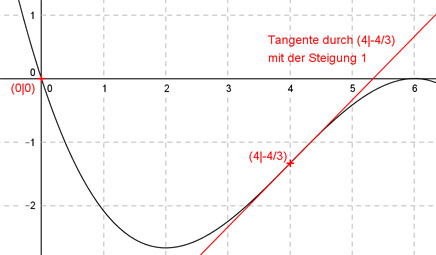

Aufgabe 78 Der Graph einer ganzrationalen Funktion 3. Grades geht durch den Koordinatenursprung, hat in (4|-4/3) einen Wendepunkt mit einer Steigung von 1. Wie lautet seine Funktionsgleichung?  Allgemeine Form einer ganzrationalen Funktion 3. Grades: f(x) = ax3 + bx2 + cx + d f’(x) = 3ax2 + 2bx + c f’’(x) = 6ax + 2b 4 Bedingungen: 1. Geht durch den Koordinatenursprung bedeutet: f(0) = 0 --> a * 03 + b * 02 + c * 0 + d = 0 --> d = 0 2. Hat in (4|- 4/3) einen Wendepunkt mit einer Steigung von 1 bedeutet erstens (d = 0 eingesetzt): f(4) = -4/3 --> a * 43 + b * 42 + c * 4 = -4/3 --> 64a + 16b + 4c = -4/3 I 3. Hat in (4|- 4/3) einen Wendepunkt mit einer Steigung von 1 bedeutet zweitens: f’’(4) = 0 --> 6a * 4 + 2b = 0 --> 24a + 2b = 0 II 4. Hat in (4|- 4/3) einen Wendepunkt mit einer Steigung von 1 bedeutet drittens: f’(4) = 1 --> 3a * 4² + 2b * 4 + c = 1 --> 48a + 8b + c = 1 III I + III * (-4) 64a + 16b + 4c = -4/3 -192a - 32b - 4c = -4 ------------------------ -128a - 16b = -16/3 IV II * 8 + IV 192a + 16b = 0 -128a - 16b = -16/3 -------------------- 64a = -16/3 |:64 16 a = - --------- = -1/12 3 * 64 a = -1/12 in II eingesetzt: 24 * (- 1/12) + 2b = 0 -2 + 2b = 0 +2 2b = 2 |:2 b = 1 a = -1/12 und b = 1 in III eingesetzt: 48 * (- 1/12) + 8 * 1 + c = 1 -4 + 8 + c = 1 4 + c = 1 |-4 c = -3 Gesuchte Funktionsgleichung: f(x) = (- 1/12)3 + x2 - 3x